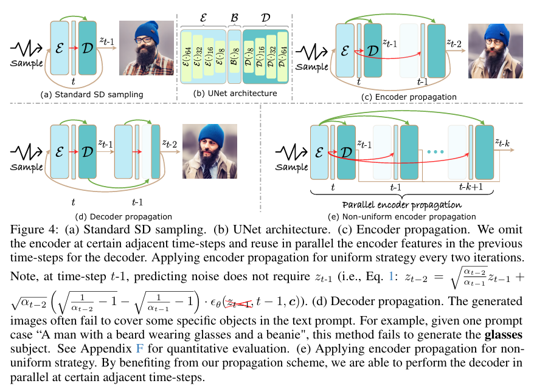
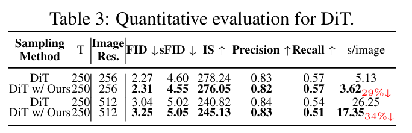

全文翻译
摘要
扩散模型的主要缺点之一是图像生成的推理时间较慢。在解决这个问题的最成功方法中，蒸馏方法表现突出。然而，这些方法需要大量的计算资源。在本文中，我们采用了另一种加速扩散模型的方法。我们对UNet编码器进行了全面研究，并对编码器特征进行了实证分析，从而深入了解了它们在推理过程中的变化。特别地，我们发现编码器特征变化极小，而解码器特征在不同时间步长间表现出显著差异。这一发现促使我们在某些相邻时间步长省略编码器计算，并将先前时间步长的编码器特征重复用作多个时间步长解码器的输入。重要的是，这使我们能够并行执行解码器计算，进一步加速去噪过程。此外，我们引入了一种先验噪声注入方法，以改善生成图像的纹理细节。除了标准的文本到图像任务外，我们还在其他任务上验证了我们的方法：文本到视频、个性化生成和参考引导生成。在不使用任何知识蒸馏技术的情况下，我们的方法分别将Stable Diffusion（SD）和DeepFloyd - IF模型的采样速度提高了41%和24%，将DiT模型的采样速度提高了34%，同时保持了高质量的生成性能。
1 引言
扩散模型（DMs）作为图像生成领域的流行范式，最近在各个领域取得了重大突破，包括文本到视频生成、个性化图像生成和参考引导图像生成。尽管扩散模型能够生成视觉质量卓越的图像，但其主要缺点在于推理时间过长。原始扩散模型的推理时间比例如生成对抗网络（GANs）慢几个数量级。阻碍扩散模型加速的挑战之一是其固有的顺序去噪过程，这限制了有效并行化的可能性。
为了提高扩散模型的推理速度，已经开发了几种方法，大致可分为两类。首先是步数减少方法，其目标是减少扩散模型推理中的采样步数，如DDIM和DPM-Solver，它们已显著减少了采样步数。其次，知识蒸馏方法逐步将慢速（多步）教师模型蒸馏成快速（少步）学生模型。一些最近的工作在少步采样场景中擅长生成高保真图像，但在单步采样中难以保持质量和多样性。蒸馏方法的主要缺点是需要重新训练才能将其蒸馏成更快的扩散模型。
与这些方法不同，我们深入研究了去噪过程的顺序性质，专注于预训练扩散模型（如SD和DiT）中编码器的特性。有趣的是，基于我们在3.2节中提出的分析，我们发现编码器特征变化极小且具有高度相似性，而解码器特征在不同时间步长间表现出显著变化。这一见解非常重要，因为它使我们能够在多个时间步长规避编码器的计算。因此，基于相同编码器输入的解码器计算可以并行执行。相反，我们重复使用在一个时间步长计算的编码器特征（因为这些特征变化极小）作为后续时间步长相邻解码器的输入。最近，DeepCache和CacheMe都利用特征相似性来实现加速。然而，它们依赖于顺序去噪，并且CacheMe需要微调。与这些方法不同，我们的方法支持并行处理，从而实现更快的推理。我们的方法支持并行处理，从而实现更快的推理。
我们表明，所提出的传播方案将SD采样速度提高了24%，DeepFloyd-IF采样速度提高了18%，DiT采样速度提高了27%。此外，由于相同的编码器特征（来自先前的时间步长）可以用作多个后续时间步长解码器的输入，这使得同时进行多个时间步长的解码成为可能。这种并行处理将SD采样速度提高了41%，DeepFloyd-IF采样速度提高了24%，DiT采样速度提高了34%。此外，为了缓解生成质量的下降，我们引入了一种先验噪声注入策略，以保留生成图像中的纹理细节。通过这些贡献，我们提出的方法在保持高图像生成质量的同时，提高了采样效率。
重要的是，我们的方法可以与几种现有的加速扩散模型的方法结合使用。与基于蒸馏的方法相比，我们的方法的主要优点是可以在推理时应用，不需要重新训练新的更快的蒸馏模型，而重新训练是一个计算要求非常高的过程，对于计算预算有限的参与者来说是不可行的。最后，我们在广泛的基于条件扩散的任务上评估了我们方法的有效性，包括文本到视频生成（如Text2Video-zero和VideoFusion）、个性化生成（如Dreambooth）和参考引导生成（如ControlNet）。
总之，我们做出了以下贡献：
- 我们对扩散模型中UNet的特征进行了全面的实证研究，表明编码器特征变化极小（而解码器特征变化显著）。
- 我们提出了一种在相邻时间步长对扩散模型采样进行并行处理的策略，显著加速了去噪过程。重要的是，我们的方法不需要任何训练或微调技术。
- 此外，我们还提出了一种先验噪声注入方法来提高图像质量（主要是提高高频纹理的质量）。
- 我们的方法可以与现有方法（如DDIM和DPM-solver）结合使用，进一步加速扩散模型的推理时间。
2 相关工作
去噪扩散模型：近年来，文本到图像的扩散模型取得了显著进展。值得注意的是，Stable Diffusion和DeepFloyd-IF是当前开源社区中最成功的两种扩散模型。这些基于UNet架构的模型用途广泛，可应用于图像编辑、超分辨率、分割和目标检测等多种任务。鉴于Transformer网络强大的可扩展性，DiT探索了将Transformer主干用于扩散模型的可能性。
扩散模型加速：扩散模型通过UNet进行迭代去噪来生成图像，这一过程耗时较长。已有许多工作致力于解决这一问题。一种策略是采用高效的扩散模型求解器，如DDIM和DPM-Solver，它们已证明能显著减少采样步数。此外，ToMe利用令牌冗余来最小化注意力操作所需的计算量。相反，知识蒸馏方法（如学生模型的渐进式简化）旨在简化现有模型。一些最近的研究将模型压缩与蒸馏相结合，以实现更快的采样。与这些方法不同，我们引入了一种新的方法来提高扩散模型推理中的采样效率，并表明我们的方法可以与几种现有的加速方法结合使用以进一步加速。
DeepCache和CacheMe是最近利用特征相似性实现加速的两项工作。DeepCache采用了直接重复使用从前一步骤缓存的特征的策略，需要迭代去噪。此外，CacheMe需要额外的微调才能获得更好的性能。相比之下，我们的方法支持并行处理，从而实现更快的推理。
3 方法
我们首先简要回顾Stable Diffusion（SD）的架构（3.1节），然后对UNet的层次特征进行全面分析（3.2节）。我们的分析表明，扩散模型的去噪过程可以部分并行化。因此，我们引入了一种新方法来加速扩散采样，同时在很大程度上保持生成质量和保真度（3.3节）。
3.1 潜在扩散模型
在扩散推理阶段，去噪网络$\epsilon_{\theta}$以文本嵌入$c$、潜在代码$z_t$和时间嵌入作为输入，预测噪声，并使用DDIM调度器生成潜在代码$z_{t-1}$：
其中，$\alpha_t$是时间步长$t$（$t=T,\dots,1$）的预定义标量函数。典型的去噪网络采用基于UNet的架构，分别由编码器$E$、瓶颈$B$和解码器$D$组成（图4b）。从编码器$E$提取的层次特征通过跳跃连接注入到解码器$D$（图4a）。为了描述方便，我们将UNet网络划分为特定的块：$E=\{E(\cdot)_s\}$、$B=\{B(\cdot)_8\}$和$D=\{D(\cdot)_s\}$，其中$s\in\{8,16,32,64\}$。$E(\cdot)_s$和$D(\cdot)_s$分别表示编码器和解码器中输入分辨率为$s$的块层。
|  |
|---|
| （a）标准SD采样。（b）UNet架构。（c）编码器传播：我们在某些相邻时间步省略编码器，并并行复用前一时间步的编码器特征作为解码器输入。采用每两次迭代的均匀策略进行编码器传播。注意，在时间步$t-1$，预测噪声不需要$z_{t-1}$（即公式1：$z_{t-2}=\sqrt{\frac{\alpha_{t-2}}{\alpha_{t-1}}} z_{t-1}+\sqrt{\alpha_{t-2}}(\sqrt{\frac{1}{\alpha_{t-2}}-1}-\sqrt{\frac{1}{\alpha_{t-1}}-1}) \cdot \epsilon_{\theta}(z_{t-1}, t-1, c)$）。（d）解码器传播：生成的图像往往无法涵盖文本提示中的某些特定对象。例如，给定提示案例“A man with a beard wearing glasses and a beanie”，此方法未能生成眼镜主体。定量评估见附录F。（e）对非均匀策略应用编码器传播：得益于我们的传播方案，我们能够在某些相邻时间步并行执行解码器。 |
Diffusion Transformer（DiT）是一种新的扩散模型架构，它用Transformer取代了UNet主干，该Transformer由28个块组成。基于我们的观察，我们将前18个块定义为编码器，剩余的10个块定义为解码器（见附录A.3）。
3.2 分析扩散模型中的UNet
在本节中，我们以基于UNet的扩散模型为例，分析预训练扩散模型的特性。我们深入研究由编码器$E$、瓶颈$B$和解码器$D$组成的UNet，以更深入地理解UNet的不同部分。需要注意的是，DiT中也存在以下观察到的特性（见附录A.3）。
跨时间步长的特征演变
我们通过实验观察到，编码器特征在相邻时间步长表现出细微的变化，而解码器特征在不同时间步长间表现出显著的变化（见图3a和图2）。具体来说，给定一个预训练的扩散模型，我们迭代生成潜在代码$z_t$（见公式1），以及相应的层次特征：$\{E(z_t,c,t)_s\}$、$\{B(z_t,c,t)_8\}$和$\{D(z_t,c,t)_s\}$（$s\in\{8,16,32,64\}$），如图4b所示。在这里，我们分析层次特征在相邻时间步长的变化情况。为了实现这一目标，我们将层次特征的变化量化如下：
| 分层特征可视化。我们按照PnP方法对分层特征应用主成分分析，并使用前三个主成分作为RGB图像进行可视化。编码器特征变化极小，在许多时间步都具有相似性（上），而解码器特征在不同时间步表现出显著变化（下）。 |
| 分析扩散模型中的UNet。（a）相邻时间步的特征演化通过均方误差衡量。（b）我们提取每个时间步UNet不同层的分层特征，沿通道维度取平均得到二维分层特征，然后计算其弗罗贝尼乌斯范数。（c）UNet编码器的分层特征具有较低的标准差，而解码器的分层特征具有较高的标准差。 |
其中，$d$表示$E(z_t,c,t)_s$中的通道数。类似地，我们还计算了$\Delta_{B(\cdot)_8}$和$\Delta_{D(\cdot)_s}$。
如图3a所示，对于编码器$E$和解码器$D$，曲线呈现出相似的趋势：在初始上升之后，变化达到平稳期，然后下降，随后在接近结束时继续增长。然而，$\Delta_{E(\cdot)_s}$和$\Delta_{D(\cdot)_s}$的变化程度在数量上有显著差异。例如，$\Delta_E(\cdot)$的最大值和方差分别小于0.4和0.05（图3a（放大区域）），而$\Delta_{D(\cdot)_s}$的相应值分别约为5和30（图3a）。此外，我们发现解码器最后一层的$\Delta_{D(\cdot)_{64}}$接近于零，这是由于去噪网络的输出在相邻时间步长相似。总之，在整个推理阶段，整体特征变化$\Delta_E(\cdot)$小于$\Delta_{D(\cdot)_s}$。
跨层的特征演变
我们通过实验观察到，在所有时间步长中，编码器和解码器的特征特性存在显著差异。对于编码器$E$，变化的强度很小，而对于解码器$D$，变化非常剧烈。具体来说，我们计算了所有时间步长中层次特征$E(z_t,c,t)_s$的Frobenius范数，称为$F_{E(\cdot)_s}=\{F_{E(z_T,c,T)_s},\dots,F_{E(z_1,c,1)_s}\}$。类似地，我们分别计算了$F_{B(\cdot)_s}$和$F_{D(\cdot)_s}$。
图3b用箱线图展示了跨层的特征演变。具体来说，对于$F_{E(\cdot)_s}$和$F_{B(\cdot)_s}$，箱子相对紧凑，第一四分位数和第三四分位数之间的范围较窄。例如，这些特征的最大箱高度（$F_E(\cdot)_{32}$）小于5（见图3b（放大区域））。这表明编码器$E$和瓶颈$B$的特征变化很小。相比之下，$F_{D(\cdot)_s}$对应的箱高度相对较大。例如，$D(\cdot)_{64}$的箱高度在第一四分位数和第三四分位数之间超过150（见图3b）。此外，我们还提供了标准差（图3c），其表现出与图3b相似的现象。这些结果表明，编码器特征在所有层中差异较小且具有高度相似性，而解码器特征则变化剧烈。
我们可以在某些时间步长省略编码器吗？
如之前的实验分析所示，我们观察到，在去噪过程中，解码器特征变化剧烈，而编码器$E$特征变化极小，并且在某些相邻时间步长具有高度相似性。因此，如图4c所示，我们建议在某些时间步长省略编码器，并将相同的编码器特征用于多个解码器步骤。这使我们能够并行计算这些多个解码器步骤。
具体来说，我们在时间步长$t-1$（$t-1<T$）删除编码器，相应的解码器（包括跳跃连接）将使用前一时间步长$t$的编码器$E$的层次输出作为输入，而不是像标准SD采样那样使用当前时间步长$t-1$的输出（更多细节见3.3节）。
当在某个时间步长省略编码器时，我们能够生成与标准SD采样类似的图像（图4c）（表1（第一和第二行）以及附录F中的附加结果）。或者，如果我们对解码器使用类似的策略（即解码器传播），我们发现生成的图像通常无法覆盖文本提示中的某些特定对象（图4d）。例如，当提供提示“一个留着胡子、戴着眼镜和无檐小便帽的男人”时，应用解码器传播时SD模型无法合成“眼镜”。这是因为语义主要包含在解码器的特征中，而不是编码器的特征中。
| 对Stable Diffusion和DeepFloyd-IF扩散模型的定量评估。 |
编码器传播利用前一时间步长的编码器输出作为当前解码器的输入，可以在推理时加速扩散模型的采样。在接下来的3.3节中，我们将进一步详细阐述编码器传播。
3.3 编码器传播
扩散采样将迭代去噪与Transformer相结合，非常耗时。因此，我们提出了一种新颖且实用的扩散采样加速方法。在扩散采样过程$t=\{T,\dots,1\}$中，我们将部署编码器传播的时间步长称为非关键时间步长，记为$t^{\text{non-key}}=\{t_0^{\text{non-key}},\dots,t_{N-1}^{\text{non-key}}\}$，剩余的时间步长称为$t^{\text{key}}=\{t_0^{\text{key}},t_1^{\text{key}},\dots,t_{T-1-N}^{\text{key}}\}$。换句话说，我们在时间步长$t^{\text{non-key}}$不使用编码器，而是利用时间步长$t^{\text{key}}$的编码器层次特征。需要注意的是，我们在初始时间步长（$t_0^{\text{key}}=T$）使用编码器$E$。因此，扩散推理时间步长可以重新表述为$\{t^{\text{key}},t^{\text{non-key}}\}$，其中$t^{\text{key}}\cup t^{\text{non-key}}=\{T,\dots,1\}$且$t^{\text{key}}\cap t^{\text{non-key}}=\varnothing$。接下来，我们介绍均匀编码器传播和非均匀编码器传播策略。
如图3a所示，在整个推理过程中，编码器特征在初始推理阶段的变化比后期阶段更大。因此，我们在初始推理阶段选择更多的关键时间步长，在后期阶段选择更少的关键时间步长。对于使用DDIM的SD模型，我们通过实验将关键时间步长定义为$t^{\text{key}}=\{50,49,48,47,45,40,35,25,15\}$；对于DeepFloyd-IF的三个阶段，关键时间步长分别为$t^{\text{key}}=\{100,99,98,\dots,92,91,90,85,80,\dots,25,20,15,14,13,\dots,2,1\}$、$\{50,49,\dots,2,1\}$和$\{75,73,70,66,61,55,48,40,31,21,10\}$（具体关键时间步长选择见附录F.2）。
剩余的时间步长被归类为非关键时间步长，我们将这种策略定义为非均匀编码器传播（见图4e）。如图4c所示，我们还探索了固定步长（如2）的时间步长选择，称为均匀编码器传播。
需要注意的是，我们的方法不会减少采样步数。在编码器传播过程中，解码器需要计算所有时间步长，因此需要为每个时间步长提供时间嵌入输入，以保持时间一致性（见附录D中的详细信息）。
表5报告了考虑各种关键和非关键时间步长组合的消融研究结果。这些结果表明，非均匀关键时间步长集在生成图像方面表现更好。
| 在MS-COCO 2017 10K子集上各种传播策略的定量评估。FTC=FID×时间/Clipscore。 |
并行非均匀编码器传播
当应用非均匀编码器传播策略时，在时间步长$t\in t^{\text{non-key}}$，解码器输入不依赖于时间步长$t$的编码器输出（见图4e），而是依赖于前一个最近的关键时间步长的编码器输出。这使我们能够在$t^{\text{non-key}}$中的这些相邻时间步长执行并行非均匀编码器传播。我们从时间步长$t$到$t-k+1$并行执行解码。由于多个时间步长的解码器前向传播可以同时进行，因此该技术进一步提高了推理效率，我们将其表示为并行批处理非关键时间步长。如图5（右）所示，这进一步将SD模型的评估时间减少了41%。
| 与SD（左）相比，编码器传播将采样时间减少了24%（中）。此外，并行编码器传播实现了采样时间41%的减少（右）。 |
先验噪声注入
尽管编码器传播可以提高推理阶段的效率，但我们观察到它会导致生成结果中的纹理信息略有损失（见图6（左、中））。受相关工作的启发，我们提出了一种先验噪声注入策略。该策略将初始潜在代码$z_T$结合到后续时间步长（即$z_t$）的生成过程中，遵循$z_t=z_t+\alpha\cdot z_T$（如果$t<\tau$），其中$\alpha=0.003$是控制$z_T$影响的比例参数，我们从$\tau=25$步开始使用这种注入机制。这种策略性结合成功地改善了纹理信息，重要的是，它几乎不需要额外的计算资源。我们观察到，纹理信息的损失发生在频域的所有频率中（见图6（右，红色和蓝色曲线））。这种方法确保生成结果在频域中与SD和$z_T$注入的结果非常相似（见图6（右，红色和绿色曲线）），并且生成的图像保持所需的保真度（见图6（左，底部））。
| （左）通过z_T注入保持图像内容，轻微补偿编码器传播导致的纹理信息损失。（右）通过z_T注入生成的图像的振幅与SD生成的图像振幅高度相似。 |
4 实验
在我们的实验中，我们评估了我们的方法与其他方法在推理加速方面的加速效果。我们还探索了将我们的方法与这些方法相结合的情况。我们没有直接将我们的方法与蒸馏方法进行比较，因为蒸馏方法虽然效果更好，但涉及计算成本高昂的重新训练。
数据集和评估指标
我们从MS-COCO2017验证数据集中随机选择10K个提示，并将它们输入到文本到图像扩散模型中，以获得10K生成图像。对于Transformer架构扩散模型，我们从1000个ImageNet类别标签中随机生成50K图像。对于其他任务，我们使用与基线相同的设置（如Text2Video-zero、VideoFusion、Dreambooth和ControlNet）。我们使用Fréchet Inception Distance（FID）指标来评估生成图像的视觉质量，并使用Clipscore来衡量图像内容与文本提示的一致性。此外，我们报告了每个图像的计算工作量（GFLOPs/图像）和采样时间（s/图像）的平均值，以表示单个图像的资源需求。有关更多详细的实现信息，请参见附录A。
4.1 文本到图像生成
我们首先在潜在空间（即SD）和像素空间（即DeepFloyd-IF）扩散模型上评估了所提出的编码器传播方法在标准文本到图像生成任务上的表现。如表1所示，我们在几乎不降低性能的情况下显著加速了扩散采样。具体来说，与标准DDIM采样相比，我们提出的方法在SD中大幅降低了计算负担（GFLOPs）27%，并将采样时间大幅减少到41%。类似地，在DeepFloyd-IF中，计算负担和时间的减少分别达到15%和24%。此外，我们的方法可以与最新的采样技术如DPM-Solver、DPM-Solver++和ToMe结合使用。我们的方法在保持良好模型性能的同时提高了采样效率，FID和Clipscore值的变化可以忽略不计（表1（第三至第八行））。我们的方法在不同的采样步数下都取得了良好的性能（图7和附录D）。
重要的是，这些结果表明我们的方法与这些加速技术是正交且兼容的。如图1所示，我们可视化了使用不同采样技术生成的图像。我们的方法仍然生成高质量的结果（附加结果见附录F）。
| 我们的方法在各种生成任务上的结果。我们显著提高了图像生成速度（秒/图像）。 |
| *不同时间步生成的图像。 |
我们的方法允许使用多GPU生成一个图像。通过多GPU并行，我们提出的方法将SD采样速度进一步提高了77%，而DeepCache和CacheMe分别实现了56%和44%的加速（见表2）。这些结果表明，我们比DeepCache和CacheMe实现了更好的加速。
| 与DeepCache和CacheMe的比较。CacheMe未开源。 |
4.2 扩散Transformer
我们还在DiT上评估了我们的方法。如表3所示，对于图像分辨率为256和512的DiT采样，我们分别实现了约29%和34%的加速，同时保持了高质量的结果（见图1和图18）。
|  |
|---|
| DiT的定量评估。 |
4.3 其他文本引导扩散模型任务
除了标准的文本到图像任务外，我们还在其他任务上验证了我们提出的方法：文本到视频生成、个性化生成和参考引导图像生成。
文本到视频
为了评估我们的方法，我们将其与Text2Video-zero和VideoFusion结合使用。如表4（第二和第四行）所示，当与我们的方法结合时，这两种方法在计算负担和生成时间上都减少了约22%到33%。这些结果表明，我们能够在保持视频保真度的同时提高文本到视频任务中生成过程的效率（图1（左，底部））。例如，当使用提示“烟花在夜空中绽放”生成视频时，VideoFusion模型在16帧的任务中需要17.92秒（1.12秒/帧），而与我们的方法结合时，只需要12.27秒（0.76秒/帧）即可生成高质量的视频（图1（左，底部））。
| 在文本到视频、个性化生成和参考引导生成任务上的定量评估。†和‡分别表示“边缘”和“涂鸦”条件。 |
个性化图像生成
Dreambooth和Custom Diffusion是通过微调文本到图像扩散模型来定制任务的两种方法。如表4（第九至第十二行）所示，我们的方法与这两种定制方法结合，加速了图像生成并减少了计算需求。在视觉上，它保持了基于参考图像生成具有特定上下文关系的图像的能力（图1（右））。
参考引导图像生成
ControlNet结合了一个可训练的编码器，成功生成了文本引导的图像，并保留了带有条件信息的相似内容。我们的方法可以同时应用于ControlNet的两个编码器。在本文中，我们使用两种条件控制来验证所提出的方法：边缘和涂鸦。表4（第五至第八行）报告了定量结果。我们观察到，它导致生成时间和计算负担的显著减少。此外，图1（中，底部）定性地表明，我们的方法成功保留了给定的结构信息，并取得了与ControlNet相似的结果。
用户研究
我们进行了一项用户研究，如图8所示，并要求受试者选择结果。我们对18名用户进行了成对比较（强制选择）（每位用户35对图像或视频）。结果表明，我们的方法与基线方法表现相当。
| 用户研究结果。 |
4.4 消融研究
我们使用均匀和非均匀编码器传播的不同选择来消融结果。表5报告了非均匀设置在FID和Clipscore方面优于均匀设置的性能（见表5（第三和第八行））。此外，我们探索了非均匀策略中的不同配置。在生成过程中，使用我们建立的关键时间步长集的策略产生了更好的结果（表5（第八行））。我们进一步展示了上述选择的定性结果。如图9所示，在相同数量的关键时间步长下，九步非均匀策略I、II和III设置的外观与提示“萤火虫点缀夜空”不一致。尽管两步设置生成的图像视觉质量令人满意，但其采样效率低于我们选择的设置（见表5（第二和第八行））。
| 使用均匀和非均匀编码器传播生成图像。与SD相比，均匀策略II的结果平滑且失去文本相关性。均匀策略III和非均匀策略I、II、III生成的图像均具有不自然的饱和度水平。 |
先验噪声注入的有效性
我们评估了注入初始$z_T$的有效性。如表6所示，与DDIM和我们的方法（第二和第四列）相比，没有$z_T$（第三列）时FID和Clipscores的差异约为0.01%，可以认为是微不足道的。尽管生成图像的视觉表达并非如此，但观察到输出包含完整的语义信息，纹理平滑（参见图6（左，第二行））。注入$z_T$有助于在编码传播过程中保持生成结果的保真度（见图6（左，第三行）和图6（右，红色和绿色曲线））。
| 先验噪声注入的定量评估。 |
5 结论
在这项工作中，我们探究了文本到图像扩散模型中UNet的编码器和解码器特性，发现编码器特征在多个时间步长中变化极小，而解码器在所有时间步长中都发挥着重要作用。基于这一发现，我们提出了编码器传播方法用于高效的扩散采样，在多种生成任务上降低了基于UNet和基于Transformer的扩散模型的时间成本。我们进行了广泛的实验，验证了我们的方法能够在保持图像质量的同时提高采样效率。
局限性：尽管我们的方法实现了高效的扩散采样，但在使用有限采样步数（如5步）时，生成质量面临挑战。此外，即使我们提出的并行化方法也可应用于网络蒸馏方法，但本文未探索这一方向，留待未来研究。
| 分层特征可视化。我们按照PnP方法对分层特征应用主成分分析，并使用前三个主成分作为RGB图像进行可视化。编码器特征变化极小，在许多时间步都具有相似性（左），而解码器特征在不同时间步表现出显著变化（右）。 |
| DiT特征统计（F-范数）。 |
| 分层特征可视化。我们按照PnP方法对分层特征应用主成分分析，并使用前三个主成分作为RGB图像进行可视化。前18个块的输出特征变化缓慢，在许多时间步表现出相似性（上），而剩余10个块的输出特征在不同时间步表现出显著变化（下）。 |
| Stable Diffusion的UNet中编码器ε、瓶颈B和解码器D各层的详细信息。 |